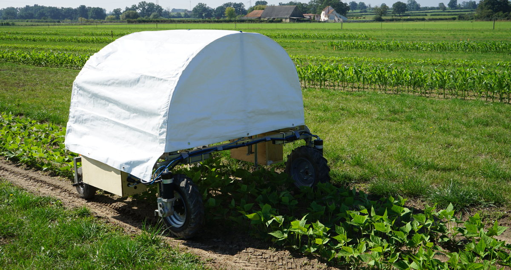
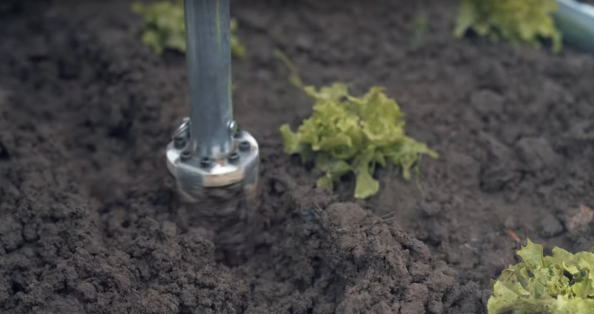
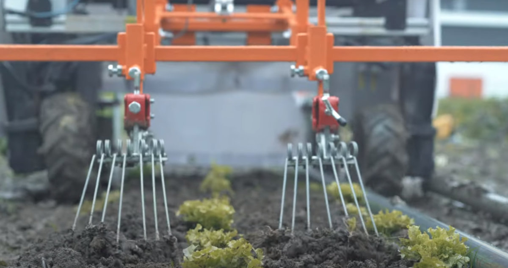
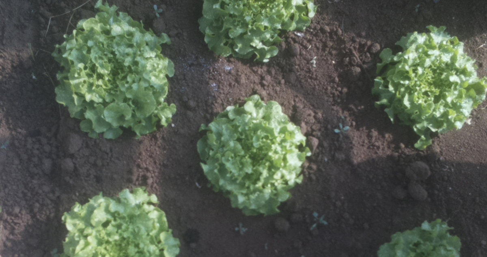

The ROMI Rover is a farming tool that assists vegetable
farmers in maintaining vegetable beds free of weeds. It does
this by regularly hoeing the surface of the soil and thus
preventing small weeds from taking root. A weekly passage of
the robot should be sufficient to keep the population of
weeds under control.

The ROMI Rover can perform the weeding task mostly
autonomously and requires only minor changes to the
organization of the farm. It is designed for vegetable beds
between 70 cm and 120 cm wide (not including the passage
ways) and for crops up to 50 cm high.

It currently handles two types of crops, lettuce and
carrots. The lettuce can be planted out in any layout, most
likely in a quincunx pattern. In this configuration the
rover uses a precision rotary hoe to clean the soil both
between the rows and the plants. This process is slower than
classical mechanical weeding. The rover can cover up to 600
m²/day.

For carrots, the rover uses classical mechanical tools, such
as stirrup hoe, to regularly clean the soil in between the
rows. In this configuration, the carrots should be sown in
line. In this classic configuration, the rover can cover a
surface of 7200 m²/day.

In addition to weeding, the embedded camera can be used to
collect images of the vegetable beds. This images can be
used by the Farmer's
Dashboard.